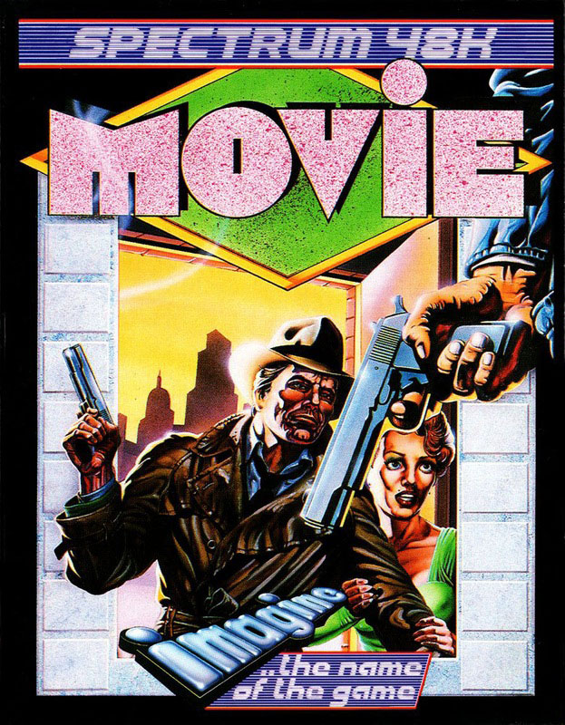
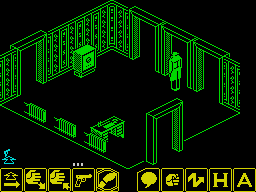
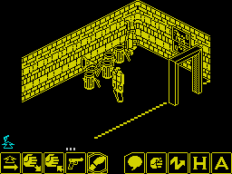
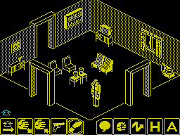

Movie


{kind=link}

| Publisher: | Imagine |
| Price: | £7.95 |
| Year: | 1986 |
| Source: | CRASH, Issue 26 |

Early in 1985, Dusko Dimitrijevic invested in a one way plane ticket from Yugoslavia to this country. Confident that he could sell two computer games he had written to Bug Byte and thus fund his trip home, he arrived in Liverpool to discover that Bug Byte were no more. Dusko had a problem.
Fortunately, he managed to track down one of the directors of Bug Byte, who advised him to see Ocean. Ocean bought the games from Dusko, and used them as promotional freebies. Before he went home, the Yugoslavian programmer spent a little time with Ocean’s programmers, picking up tips and hints on programming and getting a feel for the type of games Ocean wanted.

Auditorium. Don’t get any ideas
about that safe — you can’t get
into it!
Six months passed, and then M.O.V.I.E. arrived in Ocean’s offices. The game was snapped up, and appears on the Imagine label. Dusko Dimitrijevic should be able to afford return tickets in future...
M.O.V.I.E. is based on a New York gangster theme, and puts you in the shoes of a Philip Marlowe character. You’re a private detective who’s been hired to recover an audio tape from a gangster’s HQ. First, you have to find a girl, who will lead you to the mob’s base — but to make life that bit more difficult she has a dead ringer, a twin sister no less. The bad sister spells trouble, with a capital T. The first major task in the game is to find the right girl, then it’s a matter of following her and protecting her from harm on the way to the Boss’s hideout.
Set in New York, the game begins with your character in an office in the Big Apple. Suddenly, business becomes brisk. It’s time to leave, and take a closer look at the neighbourhood. Along the bottom of the screen there’s a row of icons used to control the trenchcoated private dick. Pressing the fire button puts the icon selecting cursor under the control of joystick and keyboard — another press on fire selects an icon. At the start of the game the cursor rests over the Move icon — a footprint — and it’s possible to move in four directions around the room you’re in. All the locations are monochromatic, presented in the three dimensional view that has become familiar with Ultimate’s releases, and games such as Fairlight and Sweevo.

buildings in M.O.V.I.E., following
the moll. The garbage men don’t
appear to be collecting this week.
Some of the objects found in locations can be shoved around — like chairs and tables. Others can be picked up and dropped using the appropriate icon, or even thrown. As you follow the girl, she’ll ask you do things for her, or fetch things, like a whisky. Bottles and bags come in handy when your guide needs bribing!
High on the list of priorities for any self respecting gumshoe is a gun. Once you’ve found one, the Gun icon comes into play, and a row of bullets appears above it. Each time a shot is fired a bullet disappears from the display. At last — you can waste people — but once the ammo runs out, all you can do is hurl the weapon at a baddie’s head. It’s time to find another gun.
The playing area encompasses several buildings, interlinked by streets in which dustbins and packing cases as well as the odd telephone booth can be found. The mob realise what you are up to, and heavies lurk in some locations waiting to give you a bad time. Some just punch — and using the Punch icon, you can fight back — while others pack a mean shooter. Getting too close to a bullet spells curtains, and your trenchcoated figure dissolves before the game returns to the start screen.

your office in M.O.V.I.E. Look
closely — there’s a gun here,
ready for the taking...
As an aid to communication, the Speech icon allows conversation by inflating a speech bubble above the figure of the Private Investigator. Type in what you have to say, and consider it said. The other characters in the game won’t accept direct orders but can be friendly and sometimes downright helpful after a bit of verbal. (Don’t be tempted to make improper suggestions to the mini-skirted girls — they reject your advances.) Some of the doors are guarded, and you’ll need to pop the password into a speech bubble to get through. It’s possible to guess some of the passwords, but persuading the girl or other characters to let you have passwords is an important part of the game.
As you collect useful items, they appear in an area of the screen above the icons. A cursor points at your latest acquisition and if you want to throw something, make sure the cursor (controlled by its own icon) is pointing at the right missile. Sometimes you need to lob objects at things in a room so they can be moved within reach. The zigzag Throw icon sends missiles bouncing round the room, and a little practice is needed before throwing becomes accurate. Lobbing a bomb is very satisfying — when it comes to rest it explodes into the words “Bom” and wastes anyone in the vicinity!
At the end of the game (or after quitting with the A icon), two scores are presented. One score indicates the number of rooms visited as a percentage of the total number of locations in the game. The other, on a scale from 0.00 to 0.99, indicates how many tasks you have completed during play. It ain’t easy being a shamus, Mac...
CRITICISM
“There’s lots of fun to be had exploring the locations in M.O.V.I.E. — nearly two hundred in all — and the detail in some rooms is very pleasing. Clocks tick and tape recorder spools whirl. The animation on the girls is really neat: they wiggle along enticing you to follow very convincingly. The icon control system is straightforward enough, but it can get a bit tricky at times when you need to enter a location which contains a gun-toting baddie — you have to flip from Move to Gun icon very quickly to get a shot in. The girls begin in a random location, so each time you play the game is a little different. Overall a great game, with lots of atmosphere. It’s a shame there’s not more sound, though. Should keep anyone busy for quite a while, solving the puzzles it contains.”
“WOW! Great graphics, the same viewpoint as in Knight Lore, Alien 8 and Fairlight, but with ‘real’ objects with which you can identify, like armchairs, crates, TV’s etc. They’re not just fantasy objects. The game is quite original, presenting a fair challenge. The graphics far surpass the other game elements. I won’t do the obvious thing, and say they are ‘filmic’, but excellent they are. Sound is a bit sparse, little beyond footsteps, and maybe the use of colour should have been a bit more adventurous. For me, M.O.V.I.E. keeps Imagine, of Yie Ar Kung Fu and Mikie fame, well up at the Ultimate level.”
“I decided to don my raincoat and CRASH hat for this one. ‘Brilliant’ was the first word that came to mind as I entered a very posh American type tower-block office, a quick look out of the window and I thought I’d better dash, so I ran out of the room and promptly bumped into a very suspicious looking coffee table. I proceeded and found an un-fingerprinted gun — might come in useful, I thought. I was right... Imagine’s first step into the monochromatic world is a success — in my mind anyway. M.O.V.I.E. is the most enthralling game I’ve every played. The scenario is a classic one, and one that I’ve never seen implemented before in a proper arcade/adventure game. (Mugsy was strategy, before Ed starts getting letters.) Everything’s fabulous — the graphics are amazingly detailed and realistic, the game goes at a very sinister pace, a cursor with inertia and a parrot that repeats everything that you say. Stop watching those old gangster movies and jump in to one via your Spectrum and a copy of M.O.V.I.E., game of the year so far, for me. Now leave me alone and let me get back to finding this twin sister.”
COMMENTS
| Control keys: | 1 to 0 fire, Q to P up, A to ENTER down, Caps X V N Symbol Shift left, Z C B M SPACE right |
| Joystick: | Kempston, Cursor, Interface 2 |
| Keyboard play: | Responsive, once you get the hang of it |
| Use of colour: | Monochromatic locations |
| Graphics: | Detailed, and well animated. No wait between screens for rooms to be drawn |
| Sound: | Only footsteps as you stump around |
| Skill levels: | One |
| Screens: | 199 rooms |
| General rating: | A neat development on the 3D theme with a very different scenario |
| Use of computer: | 90% |
| Graphics: | 95% |
| Playability: | 93% |
| Getting started: | 91% |
| Addictive qualities: | 92% |
| Value for money: | 94% |
| Overall: | 93% |